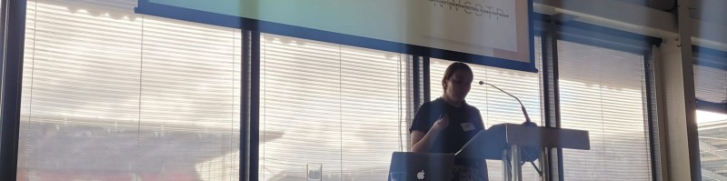

Inaugural Inclusivity Prize
International Football History Conference, Cardiff City Stadium, for my paper on women’s experiences of FA coaching courses in the 1980s. Prize: £50 book voucher.
Research · Writing · Knowledge Exchange
An outline of my academic activity in the history of sport.
Research profile
I completed my PhD in collaboration with Manchester Metropolitan University and the National Football Museum, funded by the North West Consortium Doctoral Training Partnership. My research focused on revealing, recording and representing the experiences of early women sports coaches, while exploring how the intangible cultural heritage of coaching and the masculine values embedded within it may have contributed to the marginalisation of women in these roles. I now offer independent research consultancy, drawing on my experience in historical research, oral history, and the analysis and communication of complex evidence.
Affiliations: Manchester Metropolitan University · National Football Museum · North West Consortium Doctoral Training Partnership
Email: jodie.neville2@stu.mmu.ac.uk
Recognition
International Football History Conference, Cardiff City Stadium, for my paper on women’s experiences of FA coaching courses in the 1980s. Prize: £50 book voucher.
£100 prize for the best article by a postgraduate researcher or early-career researcher published in Playing Pasts in the preceding 12 months.
£400 bursary towards conference attendance, presented at the 10th Annual PAHC Symposium.
PhD funding, with additional targeted funding (£5,000) and student development support for research, training and conference activity.
Featured presentation
Women’s experiences of FA coaching courses in the 1980s

Winner of the inaugural Inclusivity Prize
According to the 2010 Women’s FA Cup Final programme held at the National Football Museum, by a week following that game the FA would have accredited 20,000 female Level One coaches. While this marked a milestone in female football coaching provision, the gender disparity in coaching remains particularly stark in the sport (Thompson et al., 2020).
Research has identified factors including environment, family commitments and representation (LaVoi, 2018; Norman, 2021), but has not examined in detail the experiences of early female participants on coaching courses. This paper shares findings from an oral history interview with one of the first women to obtain the FA Advanced Coaching qualification in the 1980s, highlighting tangible and intangible mechanisms through which women may have been excluded. Lessons from this testimony can be applied to addressing gender disparity in coaching today.
Selected activity
Received the Playing Pasts prize for a published article.
MA/PhD Collaboration Award presentation; recipient of the 2023 £400 conference bursary.
Organised by the British Association of Applied Linguistics Special Interest Group.
Presented research on women’s experiences of FA coaching courses in the 1980s; awarded the inaugural Inclusivity Prize.
Writing
Neville, J. and Eady, J. (2023). ‘Gender and Performance in Sports Coaching: Exploring an Intangible Cultural Heritage.’ The Hive Journal, (1).
Neville, J. (2024). ‘Andrew Maraniss, Inaugural Ballers.’ Review of Inaugural Ballers: The True Story of the First US Women’s Olympic Basketball Team by A. Maraniss. Women’s History Today, Autumn 2024, 3 (11), p. 32.
Research support
Teaching & community engagement
Volunteer reading coach with Read Easy, supporting adults as they develop their reading skills and confidence.
Taught an introductory web development course, helping learners build foundational skills in web technologies.
Academic community
British Society of Sports History
International Society for the History of Physical Education and Sport
Organising the 2025 History, Politics, and Philosophy Conference at Manchester Metropolitan University with a group of PhD student volunteers.
Get in touch
For questions about my research, publications or conference work, please get in touch.
Contact me